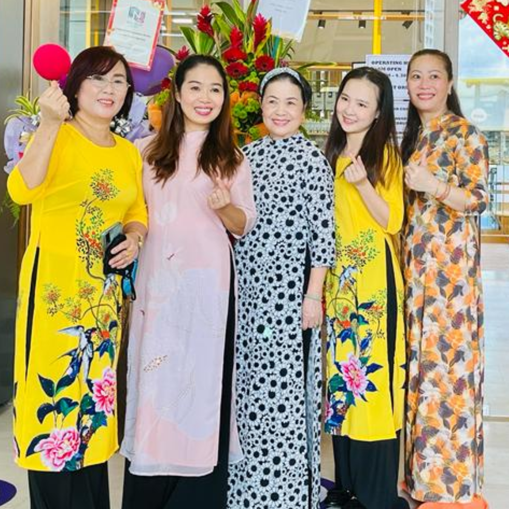
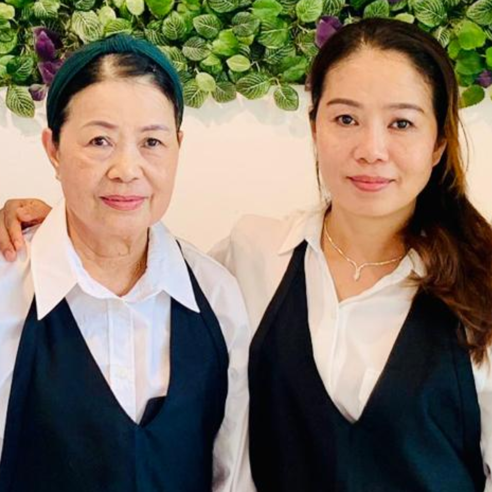

The VS Story
VS mean Vietnamese food in Singapore.
VS Cafe is our endeavour to introduce and proliferate these long
preserved traditions of Vietnamese cuisine in the vibrant food culture
of Singapore. We strive to enrich the traditions, culture and
community in Singapore to make it more vibrant.
With this vision we want to introduce VS Cafe in the multi-cultural
community of Punggol. In this Cafe we will serve our community with
best traditional Vietnamese Cuisine, prepared from the recipes that
have been carefully handed over within our family to us. We want to
provide the best culinary experience, with best quality and the same
time affordable price to the community. Our Food is prepared from
the freshest and authentic ingredients procured from Singapore and
Vietnam directly.
We believe in providing the best Vietnamese Cuisine in this heartland.

About The Owner
A proud Vietnamese Singaporean,
with her Vietnamese roots and
Singaporean values she is already
serving the vibrant heartland
community with the traditions that
have been preserved for years. She
is from a family that has been in the
business of spreading joy with food
since 1965.
They started with a
humble beginning with a food joint
serving Vietnamese Food in Saigon
(Ho Chi Minh City) and with she
taking it forward in Singapore since
May 2005. She left her high paying
accountant job to take the family
traditions forward. She started “VS
Vietnamese Cuisine” in May 2005 in
National University of Singapore.
Since launch, it was a big hit for
spreading gastronomic joy among
the multi-cultural environment of
NUS for 15 years. In May 2019, she
started VS Cafe at 332A Pasir
Panjang Road to continue spreading
her love for Vietnamese Cuisine.
Diep is exceptional chef and
Operating Manager who has
mastered traditional Vietnamese
cooking and mixes it with modern
touch, that provide a unique dining
experience to her patrons. With her
family background and her
endeavours since 2005, she also
brings valuable experience in
running and managing a success
food Business.